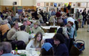
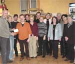
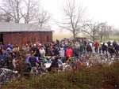
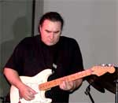
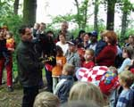

Jahresrückblick 2004
|

Unter dem Motto "Gemeinsam für Afrika" stand der 25. Herbstbasar
in der Kuppenheimer Wörtelhalle. Neben den auf großes
Interesse stoßenden
Kunstwerken, die Heiner Nagel und sein Team in zeitaufwändiger
Vorarbeit besorgt hatten, erwies sich die Mischung aus Kinderprogramm
(u.a. Märchenlesungen),
asiatischem Mittagessen und sonstiger Verköstigung, kunstgewerblichen
Ständen, gepaart mit Gemütlichkeit und entspannter Atmosphäre,
als ein Erfolgsgarant. So flossen erfreulicherweise 10.500 Euro in
Mädchen-,
Straßenkinder- und AIDS-Projekte in Afrika.
|
|

Holzbau Hurrle unterstützte zum wiederholten Male terre des hommes mit 1.000 Euro
zugunsten von AIDS-Waisen in Afrika.
Brezel-Böhmer hatte sich - anstelle von Weihnachtspräsenten für seine
Kundschaft - entschlossen, ein Straßenkinder-Projekt in Indien mit 750 zu
unterstützen.
Anlässlich des 25-jährigen Bestehens unserer Gruppe überreichte Heimo
Kienle vom Schlosscafé Favorite eine köstliche Schokoladentorte in Herzform, was wiederum
die Herzen (nicht nur der tdh-Mitarbeiter) höher schlagen ließ.
|
|

Mit einer Verkaufsquote von 70 % hatten selbst die Optimisten unter
den tdh‘lern
nicht gerechnet. Von 300 angelieferten Fahrrädern wechselten
210 den Besitzer. Wesentlich zum Erfolg trugen die technische Unterstützung
durch die "Radsportfreunde Kuppenheim", die Bewirtung
durch die "Johanniter
Kuppenheim", das Geländeareal vom "Radhaus Kastner"
und die Werbung durch die Sparkasse Gaggenau-Kuppenheim bei. An das Schulprojekt "Tirupur" (Indien)
konnten 2.000 Euro
überwiesen werden, um vorwiegend Mädchen eine handwerkliche
Ausbildung zu ermöglichen.
|
|
Zum Bersten voll war es am 3. April, als die drei
Vollblut-Musiker professionelle Interpretationen
von Blues-Legenden wie Eric Clapton,
Jimi Hendrix u. a. darboten. Überraschungsgast Werner Baumgart, ehemaliger Leiter der SWF-Big-Band, setzte mit
seinem spontanen Posaunen-Auftritt dem gelungenen Abend das i-Tüpfelchen
auf. Zusammen mit etlichen Sponsorengeldern konnten Straßenkinderprojekte in Deutschland unterstützt werden.
Erlös: 3.500 Euro.
|
|
 Wegen schlechten Wetters musste das traditionelle Favorite-Konzert
ins Rathaus verlegt werden. Das tat jedoch der Stimmung
und dem Erfolg keinerlei Abbruch. Was "Salta
Cello" und die Sängerin Sandra Hartmann den Zuhörern
boten, waren Chansons - mit und ohne Worte - mal klassisch,
mal jazzig - auf jeden
Fall ein richtiger Hörgenuss: 13 Liebesgedichte von Eduard Mörike,
zu jazz-inspirierten Chansons vertont und vom Publikum begeistert
aufgenommen. Genauso
groß war sicher die Freude beim CREN-Zentrum in Burkina Faso: Mit 6.300 Euro kommt man dem Ziel,
unterernährten Kindern wieder auf die Beine zu helfen, garantiert
ein Stück
näher.
Wegen schlechten Wetters musste das traditionelle Favorite-Konzert
ins Rathaus verlegt werden. Das tat jedoch der Stimmung
und dem Erfolg keinerlei Abbruch. Was "Salta
Cello" und die Sängerin Sandra Hartmann den Zuhörern
boten, waren Chansons - mit und ohne Worte - mal klassisch,
mal jazzig - auf jeden
Fall ein richtiger Hörgenuss: 13 Liebesgedichte von Eduard Mörike,
zu jazz-inspirierten Chansons vertont und vom Publikum begeistert
aufgenommen. Genauso
groß war sicher die Freude beim CREN-Zentrum in Burkina Faso: Mit 6.300 Euro kommt man dem Ziel,
unterernährten Kindern wieder auf die Beine zu helfen, garantiert
ein Stück
näher.
|
|

Kein Mangel an Spielfreude, Unterhaltung und Information war beim
diesjährigen
Kinderfest zu spüren. Ob Jugendorchester oder Falkner, Vorleser
oder "Hexe Wackelzahn", "Zilly die Zauberin" oder
die Ponies, Kruschtelstand oder Schminkecke, Clownfrauen oder Kletterwand,
Kistenstapeln oder Inliner-Parcours
und, und, und... Bei sommerlichen Temperaturen saß man gern
im Freien, ließ
den Kindern ihren Lauf und spürte: das Kinderfest von tdh ist
sehr beliebt - der Erlös von 6.500 Euro für Projekte gegen Kinderarbeit in Indien spricht
für sich.
Wenn wir nun allen Sponsoren, Spendern
und zahlreichen Helfern für ihre tatkräftige Unterstützung
danken, ist das keine Pflichtübung, sondern kommt von ganzem
Herzen - denn Sie alle tragen enorm viel zum Erfolg unserer Arbeit
bei - herzlichen Dank!
|
|
|
|
 Ansprechpartner Ansprechpartner
|
|
Wolfgang Deppisch
(Projektinfos)
Tel. 07222 / 32927
Heinz Wolf
(Sponsoring, Allgemeines)
Tel. 07225 / 75543
weitere Ansprechpartner
|
|
Erlöse
1992-2012
|
|

Jahr |
Euro |
1992 |
70.000 |
1993 |
75.600 |
1994 |
83.883 |
1995 |
69.617 |
1996 |
51.412 |
1997 |
61.749 |
1998 |
60.333 |
1999 |
68.742 |
2000 |
85.492 |
2001 |
106.375 |
2002 |
78.937 |
2003 |
84.027 |
2004 |
76.662 |
2005 |
149.941 |
2006 |
84.497 |
2007 |
105.958 |
2008 |
104.053 |
2009 |
100.833 |
2010 |
107.254 |
2011 |
103.600 |
| 2012 |
158.250 |
| 2013 |
163.420 |
1977-2013 |
mehr als 2,7 Mio. € |
|
Detailansicht der Erlöszahlen |
|
|


;)